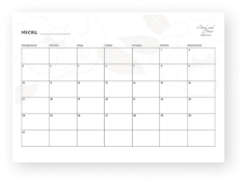
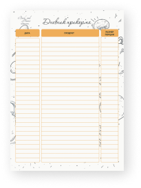
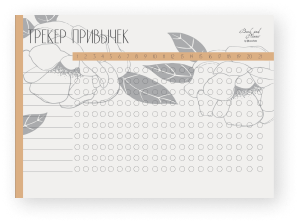
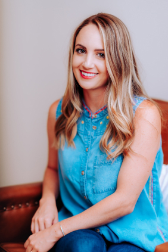

<section class="free-materials">
  <div class="container">
    <div class="free-materials__container">
      <h2 class="free-materials__title">Бесплатные материалы</h2>
      <div class="free-materials__grid">
        <div class="card-material">
          <h3 class="card-material__title">Календарь на 2 месяца</h3>
          <div class="card-material__image">
            
          </div>
          <div>
            <button type="button" class="button">Скачать календарь</button>
          </div>
        </div>

        <div class="card-material">
          <h3 class="card-material__title">Дневник прикорма</h3>
          <div class="card-material__image">
            
          </div>
          <div>
            <button type="button" class="button">Скачать трекер</button>
          </div>
        </div>

        <div class="card-material">
          <h3 class="card-material__title">Трекер привычек на 6 недель</h3>
          <div class="card-material__image">
            
          </div>
          <div>
            <button type="button" class="button">Скачать дневник</button>
          </div>
        </div>
      </div>
      <div class="about-author">
        <h2 class="about-author__title">Об авторе</h2>
        <div class="about-author__grid">
          <div class="about-author__text">
            <p>
              Всю жизнь я жила со стандарнтными установками о материнстве!
              Слышала страшилки о недосыпаниях, усталости, капризных детях, дне
              сурка и поняла, что
              <b>хочу по-другому, хочу быть счастливой с ребёнком!</b>
            </p>
            <p>
              Начала искать информацию, выстраивать ее, чтобы взглянуть на вещи
              по-новому! Я открыла для себя прекрасный огромный мир гармоничной
              жизни с ребёнком с первых месяцев его жизни!
            </p>
            <p>
              Благодаря моим знаниям и планированию, жизнь, на протяжении
              взросления Саши, интересна и полноценна! Я провожу вечера с мужем,
              с собой, друзьями, занимаюсь проектами, читаю книги и путешествую
            </p>
            <b>
              Я хочу пригласить тебя в мир счастливого материнства вместе со
              мной!
            </b>
            <div class="about-author__wrapper-btn">
              <button type="button" class="button">Присоединиться</button>
            </div>
          </div>
          <div class="about-author__image">
            
          </div>
        </div>
      </div>
    </div>
  </div>
</section>
